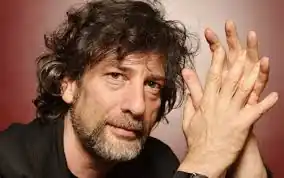
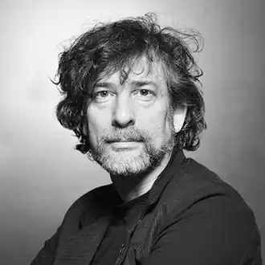
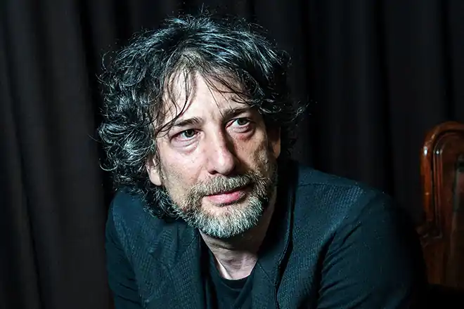

День народження 10 листопада 1960
англійський письменник-фантаст, автор графічних романів і коміксів, сценаріїв до фільмів
БІОГРАФІЯ Ніл Гейман народився 10 листопада 1960 року в місті Портсмут (Великобританія). У 1984 році він закінчив свій перший твір — біографію групи Duran Duran. У той же час він працював журналістом і займався підготовкою інтерв'ю для різних британських журналів. Наприкінці 1980-х років вийшла його книга "Don't Panic: The Official Hitchhiker's Guide to the Galaxy Companion" про письменника Дугласі Адамсі і його книзі "Автостопом по галактиці". У 1990 році вийшов роман "Добрі ознаки" (англ."Good Omens"), який Гейман написав у співавторстві з відомим англійським письменником Террі Пратчетта. У 1991-1997 роках Гейман написав роман-казку "Зоряний пил", який у 1999 році був удостоєний премії Mythopoeic Award. У 2007 році на екрани вийшла екранізація роману — фільм режисера Метью Вона "Зоряний пил". Найвідоміший роман Ніла Геймана — "Американські боги" був виданий у 2001 році, відразу отримав визнання критиків і удостоївся кількох престижних премій , в тому числі премій "Х'юго" і "Небюла". Гейман написав безліч коміксів для декількох видавців. Його відзначена нагородами серія The Sandman розповідає про Морфій (Морфеус) — антропоморфної персоніфікації Сну. Серія почалася в 1987 і було завершено у 1996: 75 випусків звичайної серії, спеціальні випуски і пролог зібрані в 11 томів і до цих пір залишаються в пресі. У 1996 Гейман і Ед Крамер склали антологію "The Sandman: Book of Dreams ", до якої увійшли твори Торі Еймос, Клайва Баркера, Теда Вільямса, Сюзанни Кларк та інших авторів. Антологія була номінована на British Fantasy Award. Також в якості запрошеного автора працював над одним із випуском коміксу "Спаун" і мінісеріей про одного з персонажів цього всесвіту, після чого судився з автором. Гейман є сценаристом декількох фільмів: міні-серіалу "Neverwhere", сценарій якого ліг в основу однойменного роману (у Росії видавався у двох варіантах перекладу під назвами "Задверье" і "ніколи"), повнометражного фільму "Беовульф" режисера Роберта Земекіса, епізоду "День Мертвих" фантастичного серіалу Вавилон 5 та екранізації власного роману "Дзеркальний маска". У лютому 2009 року вийшов на екрани мультиплікаційний фільм "Кораліна" за однойменним романом Ніла Геймана. У Ніла Геймана троє дітей від першого шлюбу. Зараз Ніл Гейман одружений на співачці і актрисі Аманді Палмер (колишньою солісткою колективу Dresden Dolls). Весілля відбулася 2 січня 2011 року. БІБЛІОГРАФІЯ "Зоряний пил" (Stardust, 1998) "Діти Ананси "(Anansi Boys, 2005) " Кораліна "(Coraline, 2002) " Задверье "(Neverwhere, 1996, новелізація власного сценарію) "Історія з кладовищем" (The Graveyard Book, 2008) "Добрі ознаки" (Good Omens, 1990) у співавторстві з Террі Пратчетта "Американські боги" (American Gods, 2001) "Інтермір "(Interworld, 2008) у співавторстві з Майклом Рівзом ЕКРАНІЗАЦІЇ 2005 —" Дзеркальний маска " 2007 — "Зоряний пил" 1996 — "Задверье" 2009 — "Кораліна в Країні Кошмарів" (анімаційний) ПРЕМІЇ Американські богивиграли преміюХьюго2002 року, преміюНебюла2002 року, премію журналуЛокус2002 року і премію імені Брема Стокера 2001 року. Добрі ознакиномінувалися на премію журналуЛокусі Всесвітню премію фентезі в 1991 році . Діти Анансивиграли Mythopoeic Awards 2006 року. Роман так само номінувався на преміюХьюго, але Гейман попросив викреслити його з номінаційного листа для того, щоб дати шанс іншим письменникам. 2010, Премія Локус в номінації "Розповідь" за An Invocation of Incuriosity Історія з кладовищемвиграла преміюХьюго2009 року. Зоряний пилномінувалася на премію журналуЛокус, а ілюстрована версія — на Mythopoeic Awards (у 1999 році). Коралінавиграла преміюХьюго2003 року, преміюНебюла2003 року, премію журналуЛокус2003 року і премію імені Брема Стокера 2003 року.